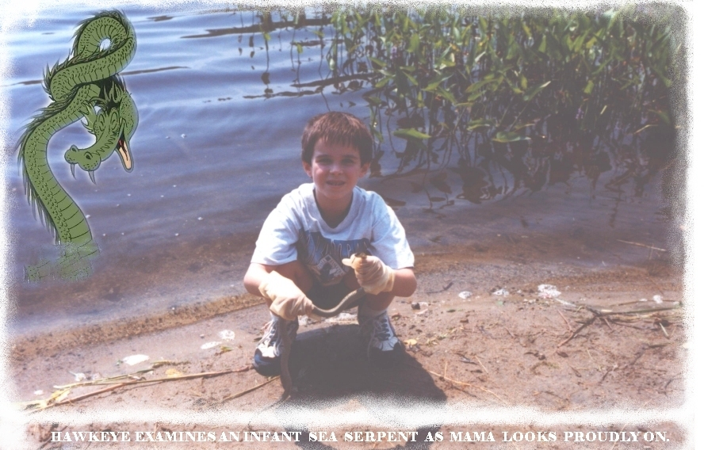
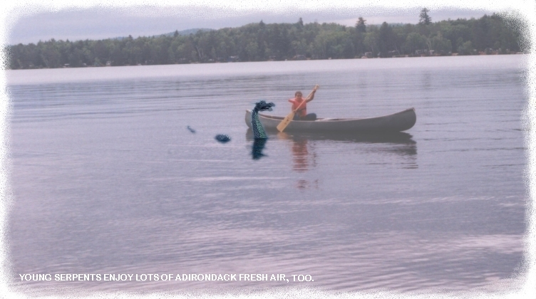

HAWKEYE'S SEA SERPENT


HAWKEYE'S SEA SERPENT
I put these snapshots on the page in 1996. My grandson was four or five at that time and believed in dragons and sea serpents. He's now 14 and believes in the Yankees. I was going to take the pics down but I still believe in dragons, sea serpents and yes, even the Yankees, so I'm leaving them here.

